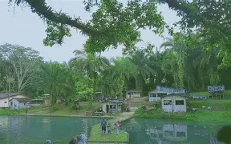
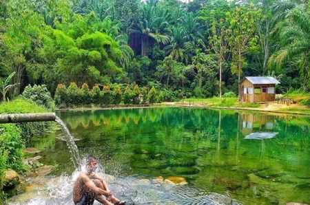
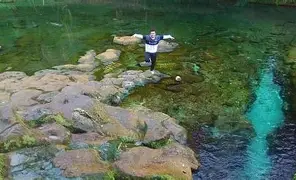
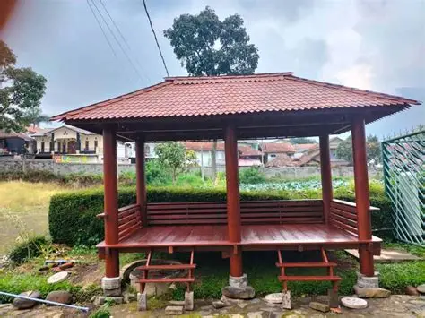
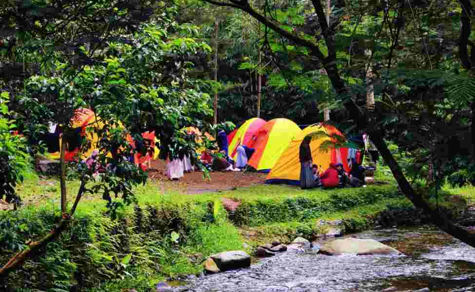

Alamat
Jl. Desa Pulau Batu, Kecamatan Sipispis, Serdang Bedagai, Sumatera Utara.
Buka di Google Maps →


Deskripsi
Pulau Batu atau Pulbat Sibatu Batu adalah pemandian alami yang terletak di Kelurahan Bah Sorma, Kecamatan Siantar Sitalasari.
Awalnya kawasan ini milik keluarga lokal yang mengelola mata air alami sebagai pemandian. Tempat ini dikenal dengan kolam alami, aliran sungai yang jernih, dan suasana sejuk dengan pepohonan tinggi yang menaungi area pemandian.
Pulbat menjadi destinasi favorit warga lokal karena keasriannya dan biaya masuk yang relatif murah atau gratis, hanya dikenai biaya parkir kendaraan. Pengelolaan tempat ini tetap berada di tangan keluarga lokal secara turun-temurun.
Fasilitas Utama
Pemandian Sungai

Bebatuan Alam Besar

Gazebo & Tempat Istirahat

Area Camping

Warung & Kuliner
Spot Foto Populer

Aliran Sungai Jernih

Bebatuan Besar

Jembatan Kayu

Hutan Alami